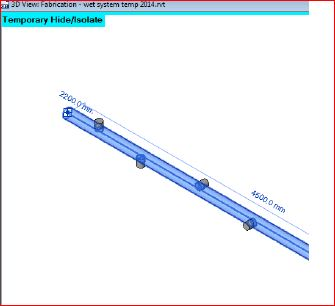

Dynamo, Centroid & Volume Calculation Migration Blitz
My French colleague Olivier Bayle, co-author of the French AEC-related Village BIM blog, just re-raised the topic of my old solid centroid and volume calculation add-in.
Let's also point out one or two of the numerous topics we tackled in the past few days on the Revit API discussion forum:
- Graphically displaying the centre of gravity using Dynamo
- GetCentroid on GitHub and blitz migration across four Revit API releases
- Finding the orientation of welded pipe outlets
- How to set the change type for DMU AddTrigger
Graphically Displaying the Centre of Gravity using Dynamo
Olivier uses the GetCentroid add-in to implement a Dynamo script graphically displaying the centre of gravity of a bunch of selected Revit elements, as demonstrated by his two-minute June 22 YouTube video Revit afficher le centre de gravité à l'aide de Dynamo:
Le but de cet article est de vous montrer que Dynamo devient le véritable compagnon de Revit notamment lorsqu’il permet d’accroitre les fonctionnalités de Revit.
We demonstrate how Dynamo is becoming a true companion of Revit, e.g., by enabling addition of enhanced functionality.
Looking forward to seeing the upcoming Village BIM article on this topic :-)
GetCentroid on GitHub and Blitz Migration Across Four Revit API Releases
Prompted by Olivier's request, I created a new home for the original GetCentroid add-in add-in implementation, which now lives in its own cosy little GetCentroid GitHub repository.
I performed a 30-minute blitz migration of it from Revit 2013 across all later versions up to Revit 2016:
- 2013.0.0.0 – initial release from december 2012
- 2014.0.0.0 – flat migration to Revit 2014
- 2015.0.0.0 – flat migration to Revit 2015
- 2015.0.0.1 – suppressed architecture mismatch warning
- 2015.0.0.2 – eliminated obsolete API usage
- 2016.0.0.0 – flat migration to Revit 2016
- 2016.0.0.1 – set copy local false on Revit API assemblies
You can use the GitHub diff functionality to see clearly and exactly what changed from version to version, e.g. ...GetCentroid/compare/2015.0.0.0...2016.0.0.1 to compare the version 2015.0.0.0 with 2016.0.0.1.
Finding the Orientation of Welded Pipe Outlets
A quick summary of the Revit API discussion forum thread on finding the orientation of welded pipe outlets:
Question: I have a pipe with several grooved or welded branches and outlets:

I would like to programmatically determine the orientation of the outlets.
Please can anyone suggest me how to achieve this?
Answer: Each of the branches or outlets is connected to the duct.
Navigate to the corresponding Connection object, e.g. via the FamilyElement > MEPSystem > ConnectionManager properties.
From that, you can determine the connection orientation. Here are three different articles discussing this topic:
How to Set the Change Type for DMU AddTrigger
A summary of another Revit API discussion forum thread, on how to use GetChangeType to get change of View3D orientation:
Question: I am using the Dynamic Model Update framework DMU to create a stereo view and want to update the right and left eye views affected by a modification of the source view orientation.
However I have a problem catching 'Orientation modified'.
I want to use this line of code:
UpdaterRegistry.AddTrigger(
m_updaterId, doc, idsToWatch, ??? );
idsToWatch is a list of element ids specifying the source view.
What should I use for the last argument?
How can I get view orientation modified?
Answer: The last argument to the AddTrigger method is the change type.
The safest change type to specify is the one returned by the Element.GetChangeTypeAny method.
Here are some discussions mentioning the AddTrigger method on The Building Coder:
- Structural Dynamic Model Update Sample
- Access Deleted Element
- Lock the Model, e.g. Prevent Deletion
- DocumentChanged versus Dynamic Model Updater
- How to Trigger a Dynamic Model Updater by Specific Element Ids
I hope this helps.